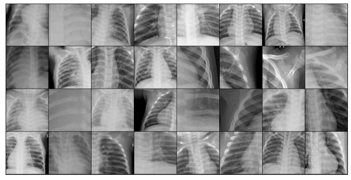
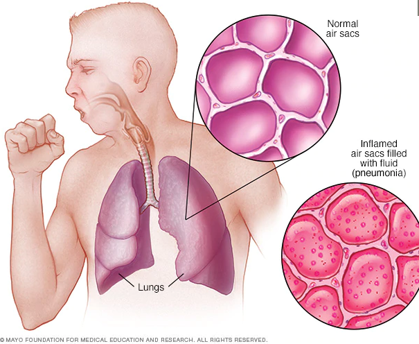
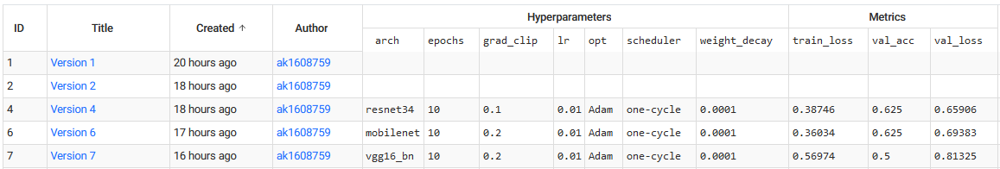

Pneumonia Detection From X-Ray Images
Introduction
This project uses X-ray Images of patients to detect whether they are suffering from pneumonia or not. Chest X-ray images (anterior-posterior) were selected from retrospective cohorts of pediatric patients of one to five years old from Guangzhou Women and Children’s Medical Center, Guangzhou. All chest X-ray imaging was performed as part of patients’ routine clinical care.
About the Dataset
The dataset is organized into 3 folders (train, test, val) and contains subfolders for each image category (Pneumonia/Normal). There are 5,863 X-Ray images (JPEG) and 2 categories (Pneumonia/Normal).
For the analysis of chest x-ray images, all chest radiographs were initially screened for quality control by removing all low quality or unreadable scans. The diagnoses for the images were then graded by two expert physicians before being cleared for training the AI system. In order to account for any grading errors, the evaluation set was also checked by a third expert.

Figure 1. Illustrative Examples of Chest X-Rays in Patients with Pneumonia. The normal chest X-ray (left panel) depicts clear lungs without any areas of abnormal opacification in the image. Bacterial pneumonia (middle) typically exhibits a focal lobar consolidation, in this case in the right upper lobe (white arrows), whereas viral pneumonia (right) manifests with a more diffuse ‘‘interstitial’’ pattern in both lungs.
Acknowledgements
Data: https://data.mendeley.com/datasets/rscbjbr9sj/2
License: CC BY 4.0
Citation: http://www.cell.com/cell/fulltext/S0092-8674(18)30154-5
What is Pneumonia?
Pneumonia is an inflammatory condition of the lung affecting primarily the small air sacs known as alveoli.Symptoms typically include some combination of productive or dry cough, chest pain, fever and difficulty breathing. The severity of the condition is variable. Pneumonia is usually caused by infection with viruses or bacteria and less commonly by other microorganisms, certain medications or conditions such as autoimmune diseases.Risk factors include cystic fibrosis, chronic obstructive pulmonary disease (COPD), asthma, diabetes, heart failure, a history of smoking, a poor ability to cough such as following a stroke and a weak immune system. Diagnosis is often based on symptoms and physical examination. Chest X-ray, blood tests, and culture of the sputum may help confirm the diagnosis.The disease may be classified by where it was acquired, such as community- or hospital-acquired or healthcare-associated pneumonia.
Analysis
Preparing Data
Each image is a [3, 1857, 1317], [C, W, H], image. We will use the ImageFolder from torchvision.datasets to read the data. Since the data is already organised into train, test and validate folders, there is no need to split the data. The following three transformations will be applies to the test, validate, and train data.
After this we will add the data to the DataLoader
Experiment with different batch size and hyperparameters shows later.
Viewing a sample of the data
In this project I will use the following two evaluation metrics. F-score and accuracy score.
Trying Model: resnet34(pretrained)
Model Architecture with the last layer changed.
Model performance after random initialization
Hyperparameters used for this model
The model gives identical performance with and without freezing. The following shows training of the model.
Graphs
The model gives around 62% accuracy on the validation set, which is not very good and can be improved.
I tried the following models with very similar results.
Conclusin so far
Pretrained models are not working very well with this dataset, or I'm using wrong set of hyperparameters. I have tried experimenting with different hyperparameter values but the results are very similar.
Trying a Custom CNN architecture
I tried the following architecture. But the model has a weird behaviour, where its validation score is fixed at 0.5. It doesnt change at all during the training.
Final Conclusion
This dataset has only around 6k images, which is relatively low. Finding more training examples will definitely help improve performance.
The custom model gets stuck at 0.5 val_score and I cant seem to find a fix for it.
mobilenet gives by far the best result with 69% validation score.
Future Work
The following things can be done to improve the performance
- Try a different architecture
- Use Transfer Learning
- Try out other set of hyperparameters
- Look for more data